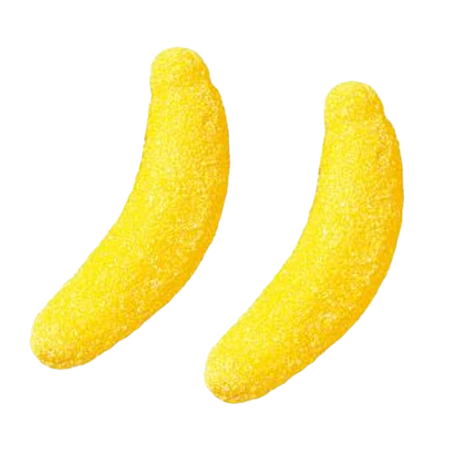

| Myth | Truth |
|---|---|
| Pizzagate, or the erroneous belief that the NYPD discovered a pedophelia ring involving many democratic party members. One of the alleged locations in the ring was comet ping pong, a D.C. pizza parlor. This misinformation actually led to a shooting, and several threats made to comet pizza and other alleged members of the ring. | One of the main claims was that there was an underground network of tunnels in ping pong, however the picture used to proport this was proven to be a picture of another location. In addition a picture of the owner of comet wearing a "j'♥ l'enfant" t- shirt (pictured right) meaning, "i ♥ the child", circulated. However this was actually a shirt referencing a bar named after Pierre Charles L'enfant, in addition it was not the owner wearing the shirt in the picture. |
| Have you ever heard that banana flavored candy tastes so odd because it mimics the taste of a gros micheal, a previously popular banana? This is in fact incorrect. | In reality, it tastes so odd because the chemical used to flavor it, isoamyl acetate, is merely one of the many that contribute to a real bananas flavor. |
| Online there has been claims that many impressive buildings today were actually remenants of a vast empire named Tartaria, or the Tartarian Empire. They claim that the empire was vastly technologically superior and was wiped away by mudfloods, and that its existence is being covered up. This theory is in all reality built on pseudo scientific/historic theories, based on the previous historic name for Central Asia, Tartary. | Those who believe in this theory purport that buildings such as the US states customs house is actually a remenant of this empire, stating that it makes little sense as to how a mail office could be built so fantastically. They believe that its domes and great arched doorways were not meant for us, believing tall domes to be things contacting space, or that the archways were intended for tartarians, who were giants. However they do not realize that this "simple mailhouse" was a massive project on the federal level, intended to sort and process the mail of at least 10 U.S states. In addition the initial design was actually a contest to improve morale in South Carolina after the civil war. Theorists also use "evidence" such as many buildings having windows that are below ground, believing this to be evidence of the mud floods covering up parts of the buildings. However this is due to a lack of understanding of architecture in previous decades. These windows actually were used either as fire escapes, or simply to allow natural light into underground areas before electric lighting was widely available. |
| I myself was taught in school that George Washington Carver was the inventor of peanut butter. However, this is not the case. | In all reality peanut butter was used as early as the 15th century by the Incan and Aztec societies. In addition the first peanut butter patent was by John Harvey Kellogg in 1895. It is believed this misinformation came from an opinion piece by William F. Buckley Jr. |
| It is regularly said by many people who speak out against immigration that immigrants drive the crime rates higher. However this is not the case. | According to a study done by the NBER (national bureau of economic research) in july of 2023, immigrants are 60% less likely to be incarcerated than U.S born residents. This study includes data taken from 1870 to 2020 by the U.S census bureau, a period of 150 years. |
